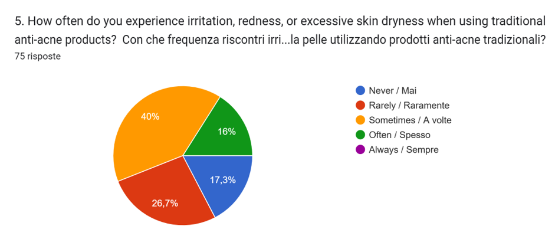
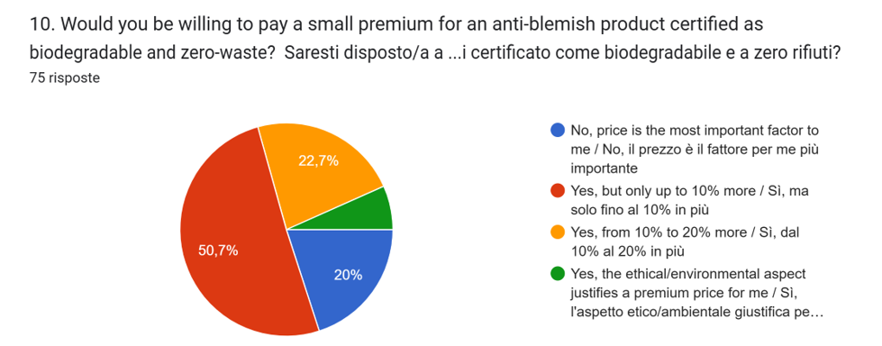
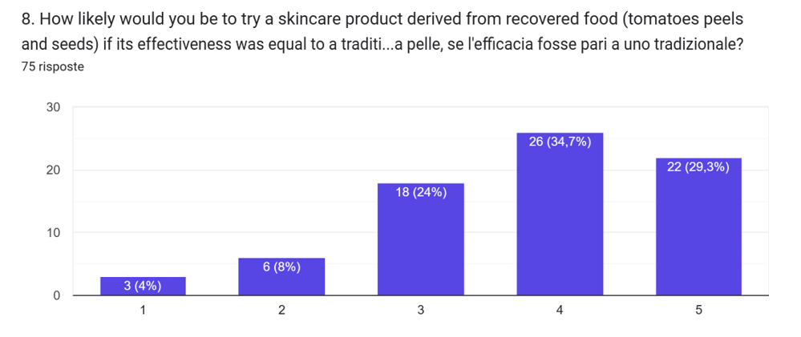

MARKET & CONSUMER INSIGHTS
Data-driven validation from our latest skincare habits survey
To build the next generation of acne care, we analyzed the habits, frustrations, and desires of real consumers. The data speaks loud and clear: people are tired of choosing between skin health and environmental health. Here is what we discovered.
56%
The Side-Effects of Traditional Acne Care
More than half of the respondents regularly experience irritation, redness, or excessive skin dryness when using traditional anti-acne products.

81%
Eco-Guilt is Real (And Consumers Will Pay to Fix It)
56% of users experience "eco-guilt" when using single-use plastics or non-biodegradable pads in their beauty routine. Because of this, 81% of respondents are ready to pay a premium price for an anti-blemish solution certified as 100% biodegradable and zero-waste.

64%
Ready for Circular Biotechnology
When asked if they would try a skincare product derived from recovered food waste (like tomato peels and seeds), 64% of people stated they are highly likely to try it, provided the effectiveness is equal to traditional treatments. Furthermore, 44% actively prefer natural plant-based extracts over synthetic ones.

What Does the Perfect Patch Look Like?
75% of consumers demand that a blemish treatment must be "invisible" or highly discreet so they can confidently wear it outside the house. When asked to design their ideal patch, users requested:
Want to help us test the perfect patch?
APPLY AS A VOLUNTEER